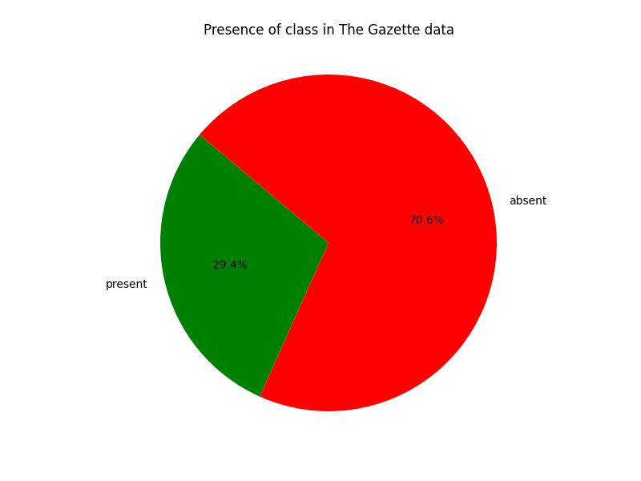
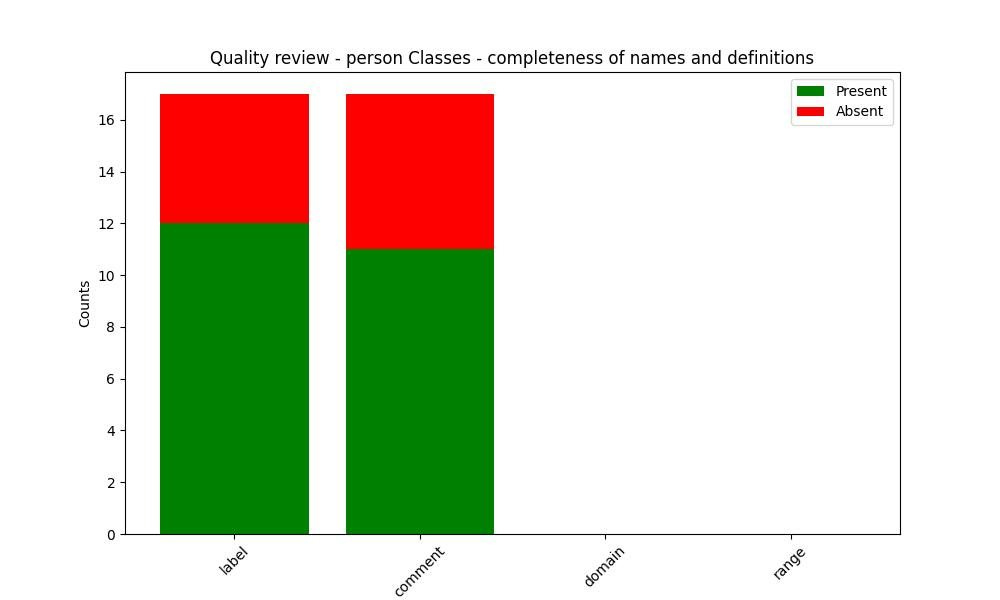
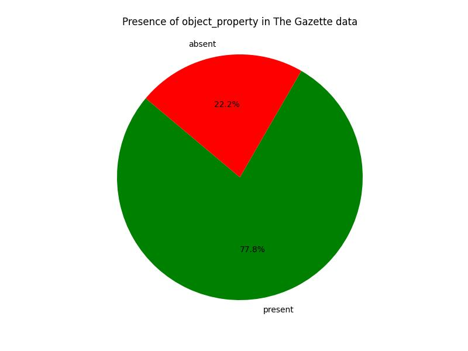
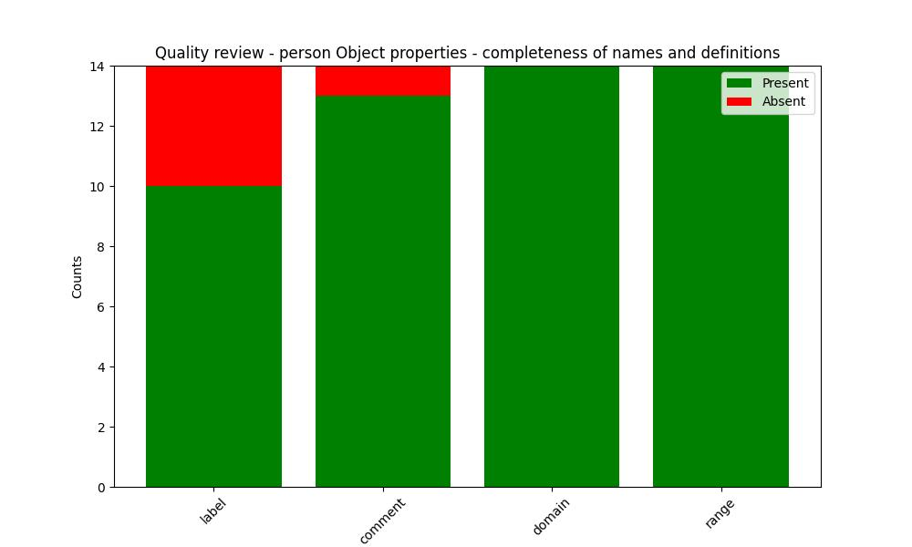
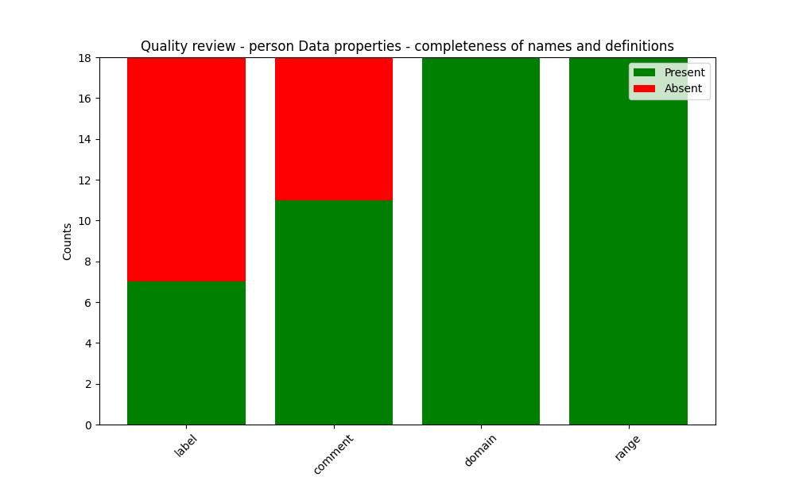

The Gazette Data Model
Person Ontology
Documentation
View documentationQuality review
OWL Class
Relevance
Frequency in The Gazette data
| URI | Frequency |
|---|---|
| http://www.w3.org/2006/vcard/ns#Address | 6068818 |
| https://www.thegazette.co.uk/def/person#Person | 1028080 |
| https://www.thegazette.co.uk/def/person#Role | 637501 |
| https://www.thegazette.co.uk/def/person#Employment | 62030 |
| https://www.thegazette.co.uk/def/person#InsolvencyPractitioner | 8515 |
| http://www.gazettes.co.uk/ontology/organisation#Department | 0 |
| https://www.thegazette.co.uk/def/person#Member | 0 |
| https://www.thegazette.co.uk/def/person#Receiver | 0 |
| https://www.thegazette.co.uk/def/person#Position | 0 |
| https://www.thegazette.co.uk/def/person#Petitioner | 0 |
| https://www.thegazette.co.uk/def/person#Liquidator | 0 |
| https://www.thegazette.co.uk/def/person#Male | 0 |
| http://www.geonames.org/ontology#Feature | 0 |
| https://www.thegazette.co.uk/def/person#Female | 0 |
| https://www.thegazette.co.uk/def/person#Director | 0 |
| https://www.thegazette.co.uk/def/person#Administrator | 0 |
| https://www.thegazette.co.uk/def/person#Solicitor | 0 |
Completeness
| URI | http://www.gazettes.co.uk/ontology/organisation#Department |
|---|---|
| Label | None |
| Comment | None |
| URI | http://www.geonames.org/ontology#Feature |
|---|---|
| Label | None |
| Comment | None |
| URI | http://www.w3.org/2006/vcard/ns#Address |
|---|---|
| Label | None |
| Comment | None |
| URI | https://www.thegazette.co.uk/def/person#Administrator |
|---|---|
| Label | Administrator class |
| Comment | The role of a Administrator - the person/organisation appointed as administrator |
| URI | https://www.thegazette.co.uk/def/person#Director |
|---|---|
| Label | Director class |
| Comment | The role of a Director - someone who controls resources and expenditures |
| URI | https://www.thegazette.co.uk/def/person#Employment |
|---|---|
| Label | Employment |
| Comment | Position held within an organisation - an employment can encompass one or more roles |
| URI | https://www.thegazette.co.uk/def/person#Female |
|---|---|
| Label | None |
| Comment | None |
| URI | https://www.thegazette.co.uk/def/person#InsolvencyPractitioner |
|---|---|
| Label | Insolvency Practitioner |
| Comment | A person who is a registered Insolvency Practitioner this is different to a role in the fact that a persons role changes according to their employment whereas an IP is a registered appointment that a person takes with them through whatever roles they are employed in |
| URI | https://www.thegazette.co.uk/def/person#Liquidator |
|---|---|
| Label | Liquidator class |
| Comment | The role of a Liquidator - the person/organisation appointed as Liquidator |
| URI | https://www.thegazette.co.uk/def/person#Male |
|---|---|
| Label | None |
| Comment | None |
| URI | https://www.thegazette.co.uk/def/person#Member |
|---|---|
| Label | Member class |
| Comment | The role of a Member of Staff |
| URI | https://www.thegazette.co.uk/def/person#Person |
|---|---|
| Label | Person |
| Comment | None |
| URI | https://www.thegazette.co.uk/def/person#Petitioner |
|---|---|
| Label | Petitioner class |
| Comment | The role of a Petitioner - the person/organisation appointed as Petitioner |
| URI | https://www.thegazette.co.uk/def/person#Position |
|---|---|
| Label | Position class |
| Comment | responsibility in business or other enterprise |
| URI | https://www.thegazette.co.uk/def/person#Receiver |
|---|---|
| Label | Receiver class |
| Comment | The role of a Receiver - this can either be a person appointed as a receiver within an organisation or an individual office of the official receiver |
| URI | https://www.thegazette.co.uk/def/person#Role |
|---|---|
| Label | Role class |
| Comment | A position involving a specific activity that is held either by a person or organisation eg a role can be a person who is a solicitor within an organisation or a role of solicitor can be provided by an organisation without reference to a particular person |
| URI | https://www.thegazette.co.uk/def/person#Solicitor |
|---|---|
| Label | Solicitor class |
| Comment | The role of a Solicitor - the person/organisation appointed as Solicitor |
Object property
Relevance
Frequency in The Gazette data
| URI | Frequency |
|---|---|
| https://www.thegazette.co.uk/def/person#hasAddress | 1076606 |
| https://www.thegazette.co.uk/def/person#hasRole | 400207 |
| https://www.thegazette.co.uk/def/person#hasEmployment | 141701 |
| https://www.thegazette.co.uk/def/person#hasPreviousAddress | 314 |
| https://www.thegazette.co.uk/def/person#hasPrincipalTradingAddress | 0 |
| https://www.thegazette.co.uk/def/person#assignedBy | 0 |
| https://www.thegazette.co.uk/def/person#employedAs | 0 |
| https://www.thegazette.co.uk/def/person#hasDepartmentMember | 0 |
| https://www.thegazette.co.uk/def/person#hasEmployee | 0 |
| https://www.thegazette.co.uk/def/person#hasSpatialLocation | 0 |
| https://www.thegazette.co.uk/def/person#isBaseFor | 0 |
| https://www.thegazette.co.uk/def/person#isBasedAt | 0 |
| https://www.thegazette.co.uk/def/person#isMemberOfDepartment | 0 |
| https://www.thegazette.co.uk/def/person#undertakenBy | 0 |
Completeness
| URI | https://www.thegazette.co.uk/def/person#hasPrincipalTradingAddress |
|---|---|
| Label | hasPrincipalTradingAddress property |
| Comment | Principal Trading Address associated with a person |
| Domain | https://www.thegazette.co.uk/def/person#Person |
| Range | http://www.w3.org/2006/vcard/ns#Address |
| URI | https://www.thegazette.co.uk/def/person#assignedBy |
|---|---|
| Label | assignedBy property |
| Comment | role assigned to an employment |
| Domain | https://www.thegazette.co.uk/def/person#Role |
| Range | https://www.thegazette.co.uk/def/person#Employment |
| URI | https://www.thegazette.co.uk/def/person#employedAs |
|---|---|
| Label | employedAs property |
| Comment | The role associated with an employment |
| Domain | https://www.thegazette.co.uk/def/person#Employment |
| Range | https://www.thegazette.co.uk/def/person#Role |
| URI | https://www.thegazette.co.uk/def/person#hasAddress |
|---|---|
| Label | hasAddress |
| Comment | Current or last registered address for a person |
| Domain | https://www.thegazette.co.uk/def/person#Person |
| Range | http://www.w3.org/2006/vcard/ns#Address |
| URI | https://www.thegazette.co.uk/def/person#hasDepartmentMember |
|---|---|
| Label | isBaseFor property |
| Comment | Employment that is held at specific location |
| Domain | http://www.gazettes.co.uk/ontology/organisation#Department |
| Range | https://www.thegazette.co.uk/def/person#Position |
| URI | https://www.thegazette.co.uk/def/person#hasEmployee |
|---|---|
| Label | None |
| Comment | Person who developes an employment |
| Domain | https://www.thegazette.co.uk/def/person#Employment |
| Range | https://www.thegazette.co.uk/def/person#Person |
| URI | https://www.thegazette.co.uk/def/person#hasEmployment |
|---|---|
| Label | None |
| Comment | Employment developed by a person |
| Domain | https://www.thegazette.co.uk/def/person#Person |
| Range | https://www.thegazette.co.uk/def/person#Employment |
| URI | https://www.thegazette.co.uk/def/person#hasPreviousAddress |
|---|---|
| Label | None |
| Comment | Registered address that a person had in the past - this usually represents a move |
| Domain | https://www.thegazette.co.uk/def/person#Person |
| Range | http://www.w3.org/2006/vcard/ns#Address |
| URI | https://www.thegazette.co.uk/def/person#hasRole |
|---|---|
| Label | hasRole property |
| Comment | The role associated with a person |
| Domain | https://www.thegazette.co.uk/def/person#Person |
| Range | https://www.thegazette.co.uk/def/person#Role |
| URI | https://www.thegazette.co.uk/def/person#hasSpatialLocation |
|---|---|
| Label | None |
| Comment | None |
| Domain | http://www.w3.org/2006/vcard/ns#Address |
| Range | https://www.thegazette.co.uk/def/person#Person |
| URI | https://www.thegazette.co.uk/def/person#isBaseFor |
|---|---|
| Label | isBaseFor property |
| Comment | Employment that is held at specific location |
| Domain | http://www.geonames.org/ontology#Feature |
| Range | https://www.thegazette.co.uk/def/person#Position |
| URI | https://www.thegazette.co.uk/def/person#isBasedAt |
|---|---|
| Label | basedAt |
| Comment | Location that role is based at |
| Domain | https://www.thegazette.co.uk/def/person#Position |
| Range | http://www.geonames.org/ontology#Feature |
| URI | https://www.thegazette.co.uk/def/person#isMemberOfDepartment |
|---|---|
| Label | basedAt |
| Comment | Location that role is based at |
| Domain | https://www.thegazette.co.uk/def/person#Position |
| Range | http://www.gazettes.co.uk/ontology/organisation#Department |
| URI | https://www.thegazette.co.uk/def/person#undertakenBy |
|---|---|
| Label | undertakenBy property |
| Comment | the person that is associated with the role |
| Domain | https://www.thegazette.co.uk/def/person#Role |
| Range | https://www.thegazette.co.uk/def/person#Person |
Data property
Relevance
Frequency in The Gazette data
| URI | Frequency |
|---|---|
| https://www.thegazette.co.uk/def/person#hasIPnum | 870293 |
| https://www.thegazette.co.uk/def/person#initials | 730014 |
| https://www.thegazette.co.uk/def/person#roleName | 643747 |
| https://www.thegazette.co.uk/def/person#dateOfBirth | 297789 |
| https://www.thegazette.co.uk/def/person#hasIPCapacity | 285663 |
| https://www.thegazette.co.uk/def/person#alsoKnownAs | 253591 |
| https://www.thegazette.co.uk/def/person#jobTitle | 201298 |
| https://www.thegazette.co.uk/def/person#hasStatus | 130943 |
| https://www.thegazette.co.uk/def/person#isDeceased | 29075 |
| https://www.thegazette.co.uk/def/person#noticeDated | 17755 |
| https://www.thegazette.co.uk/def/person#hasMaidenName | 9743 |
| https://www.thegazette.co.uk/def/person#honour | 2737 |
| https://www.thegazette.co.uk/def/person#isTradingAs | 2529 |
| https://www.thegazette.co.uk/def/person#additionalInformationIP | 904 |
| https://www.thegazette.co.uk/def/person#additionalContactName | 0 |
| https://www.thegazette.co.uk/def/person#houseInformation | 0 |
| https://www.thegazette.co.uk/def/person#hasPersonalDetails | 0 |
| https://www.thegazette.co.uk/def/person#bankruptcyStatus | 0 |
Completeness
| URI | https://www.thegazette.co.uk/def/person#isTradingAs |
|---|---|
| Label | None |
| Comment | None |
| Domain | https://www.thegazette.co.uk/def/person#Person |
| Range | http://www.w3.org/2001/XMLSchema#string |
| URI | https://www.thegazette.co.uk/def/person#hasPersonalDetails |
|---|---|
| Label | None |
| Comment | hasPersonalDetails |
| Domain | https://www.thegazette.co.uk/def/person#Person |
| Range | http://www.w3.org/2001/XMLSchema#string |
| URI | https://www.thegazette.co.uk/def/person#hasStatus |
|---|---|
| Label | None |
| Comment | hasStatus |
| Domain | https://www.thegazette.co.uk/def/person#Person |
| Range | http://www.w3.org/2001/XMLSchema#string |
| URI | https://www.thegazette.co.uk/def/person#alsoKnownAs |
|---|---|
| Label | None |
| Comment | Another name by which the person was known |
| Domain | https://www.thegazette.co.uk/def/person#Person |
| Range | http://www.w3.org/2001/XMLSchema#string |
| URI | https://www.thegazette.co.uk/def/person#isDeceased |
|---|---|
| Label | None |
| Comment | Is this person deceased |
| Domain | https://www.thegazette.co.uk/def/person#Person |
| Range | http://www.w3.org/2001/XMLSchema#string |
| URI | https://www.thegazette.co.uk/def/person#bankruptcyStatus |
|---|---|
| Label | None |
| Comment | Status of bankruptcy |
| Domain | https://www.thegazette.co.uk/def/person#Person |
| Range | http://www.w3.org/2001/XMLSchema#string |
| URI | https://www.thegazette.co.uk/def/person#dateOfBirth |
|---|---|
| Label | dateOfBirth |
| Comment | None |
| Domain | https://www.thegazette.co.uk/def/person#Person |
| Range | http://www.w3.org/2001/XMLSchema#date |
| URI | https://www.thegazette.co.uk/def/person#hasIPnum |
|---|---|
| Label | IpNumber |
| Comment | Insolvency Practice number - this is associated with a person - the Insolvency Service provide a free database search at http://www.insolvency-service.co.uk/newipsearch.htm |
| Domain | https://www.thegazette.co.uk/def/person#InsolvencyPractitioner |
| Range | http://www.w3.org/2001/XMLSchema#string |
| URI | https://www.thegazette.co.uk/def/person#hasIPCapacity |
|---|---|
| Label | IPCapacity |
| Comment | None |
| Domain | https://www.thegazette.co.uk/def/person#InsolvencyPractitioner |
| Range | http://www.w3.org/2001/XMLSchema#string |
| URI | https://www.thegazette.co.uk/def/person#noticeDated |
|---|---|
| Label | noticeDated |
| Comment | None |
| Domain | https://www.thegazette.co.uk/def/person#InsolvencyPractitioner |
| Range | http://www.w3.org/2001/XMLSchema#date |
| URI | https://www.thegazette.co.uk/def/person#additionalInformationIP |
|---|---|
| Label | additionalInformation |
| Comment | None |
| Domain | https://www.thegazette.co.uk/def/person#InsolvencyPractitioner |
| Range | http://www.w3.org/2001/XMLSchema#string |
| URI | https://www.thegazette.co.uk/def/person#additionalContactName |
|---|---|
| Label | additionalInformation |
| Comment | None |
| Domain | https://www.thegazette.co.uk/def/person#InsolvencyPractitioner |
| Range | http://www.w3.org/2001/XMLSchema#string |
| URI | https://www.thegazette.co.uk/def/person#hasMaidenName |
|---|---|
| Label | None |
| Comment | Optional name corresponding to the one when the person was single |
| Domain | https://www.thegazette.co.uk/def/person#Person |
| Range | http://www.w3.org/2001/XMLSchema#string |
| URI | https://www.thegazette.co.uk/def/person#houseInformation |
|---|---|
| Label | None |
| Comment | None |
| Domain | http://www.w3.org/2006/vcard/ns#Address |
| Range | http://www.w3.org/2001/XMLSchema#string |
| URI | https://www.thegazette.co.uk/def/person#jobTitle |
|---|---|
| Label | occupation |
| Comment | Name of the job position |
| Domain | https://www.thegazette.co.uk/def/person#Employment |
| Range | http://www.w3.org/2001/XMLSchema#string |
| URI | https://www.thegazette.co.uk/def/person#roleName |
|---|---|
| Label | None |
| Comment | Name of the role undertaken by a person |
| Domain | https://www.thegazette.co.uk/def/person#Role |
| Range | http://www.w3.org/2001/XMLSchema#string |
| URI | https://www.thegazette.co.uk/def/person#initials |
|---|---|
| Label | None |
| Comment | Initial of the name of a Person |
| Domain | https://www.thegazette.co.uk/def/person#Person |
| Range | http://www.w3.org/2001/XMLSchema#string |
| URI | https://www.thegazette.co.uk/def/person#honour |
|---|---|
| Label | None |
| Comment | Honour of a Person |
| Domain | https://www.thegazette.co.uk/def/person#Person |
| Range | http://www.w3.org/2001/XMLSchema#string |